Excel → 画像・PDF
横長の表、画像、文字配置の変換例
架空のExcelをPNG・PDFへ変換した実際の結果です。横長の表は文字を読める倍率まで縮小し、収まらない部分を横方向にも分割します。入力と全ページを開いて比較できます。
120列 × 300行
36,000セルを縦横24ページに分割。
横長の表
24列の縮小と48列の横分割を比較。
画像と文字配置
画像3枚、文字のはみ出し、折り返し・中央揃え・縦書き。
横長の表と画像
表と画像を含む52列の範囲も横分割。
120列 × 300行：縦横24ページの実変換
A1:DP300に架空の業務一覧36,000セルを配置した大型Excelです。既定の文字描画倍率から54.5%へ縮小し、11ptの文字を12pxで描画。10列単位の結合見出しを保ち、20列ずつの横6分割と縦4分割で、PNG・PDFとも24ページになりました。
縦方向は1〜98行、99〜196行、197〜294行、295〜300行。上段を左から右へ出力してから次の段へ進みます。全範囲の出力、36,000セルの重複・欠落なし、PDFの実ページ数24、PNG/PDFのページ座標一致を確認しています。
ローカルHTTP往復時間はPNG約6.7秒、PDF約12.1秒です。自動でヘッダや先頭列を再掲せず、元の範囲を連続するページとして描画しています。
業務フローが1ページ、2つの印刷範囲が2ページ、縦長一覧が2ページ、42列の横長マトリックスが2ページ。PNG・PDFの両方にすべてのシートを含めています。
基本サンプルの入力と結果
日本語、結合セル、貼り付け画像、基本図形、複数の印刷範囲を含む4シートです。以下の一覧から全ページを開けます。
| PNGページ | シート | 描画した行・列 | 大きさ | 倍率 |
|---|---|---|---|---|
| ページ01 | 画像付き業務フロー | A1:L26（1〜26行、A〜L列） | 1261 × 1248 px | 2.000 px/pt（基準の100.0%） |
| ページ02 | 印刷範囲2つ | A1:F12（1〜12行、A〜F列） | 820 × 576 px | 2.000 px/pt（基準の100.0%） |
| ページ03 | 印刷範囲2つ | A18:F29（18〜29行、A〜F列） | 820 × 576 px | 2.000 px/pt（基準の100.0%） |
| ページ04 | 縦長一覧 | A1:F70（1〜70行、A〜F列） | 935 × 2800 px | 2.000 px/pt（基準の100.0%） |
| ページ05 | 縦長一覧 | A71:F125（71〜125行、A〜F列） | 935 × 2200 px | 2.000 px/pt（基準の100.0%） |
| ページ06 | 横長マトリックス | A1:AC12（1〜12行、A〜AC列） | 1994 × 315 px | 1.091 px/pt（基準の54.5%） |
| ページ07 | 横長マトリックス | AD1:AP12（1〜12行、AD〜AP列） | 894 × 315 px | 1.091 px/pt（基準の54.5%） |


セル・画面画像・業務フロー
左側の受付一覧と説明はセル、右側の画面は貼り付けPNG、下段はExcelの基本図形です。各要素を同じシート座標から描画しています。
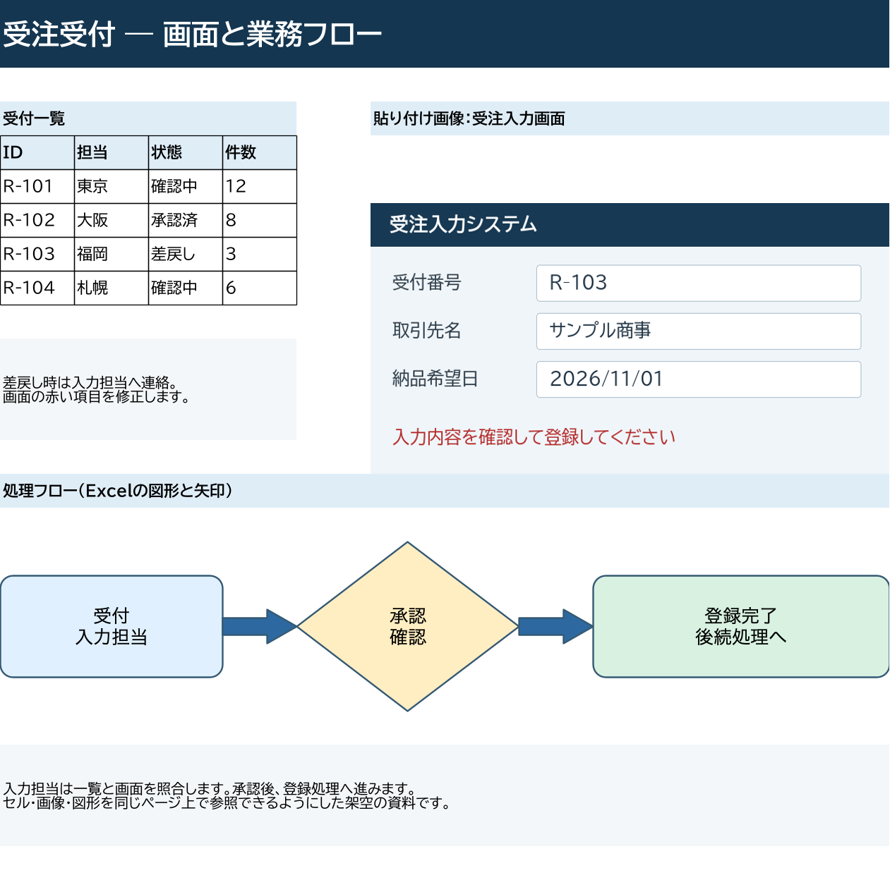
PNGを元サイズで開く · PNGを保存
Playgroundで結果を確認する
PlaygroundでExcelとPNG／PDFを選ぶと、ZIPを保存できます。PNGでは生成された全ページをプレビューし、横分割などの注意事項をreportと併せて確認できます。PDFでは「PDFを保存」から開き、必要に応じて「PDFプレビュー」を展開します。
横分割後のページは上段の左から右、次の段の左から右の順です。保存したreportのfirstRow・lastRow・firstColumn・lastColumnでも、各ページがどの行・列を描画したか確認できます。
2つの印刷範囲
同一シートに設定したA1:F12とA18:F29を個別のページにします。間にある空白行を含めて1ページへ縮小せず、範囲ごとに描画します。
PNGを元サイズで開く · PNGを保存
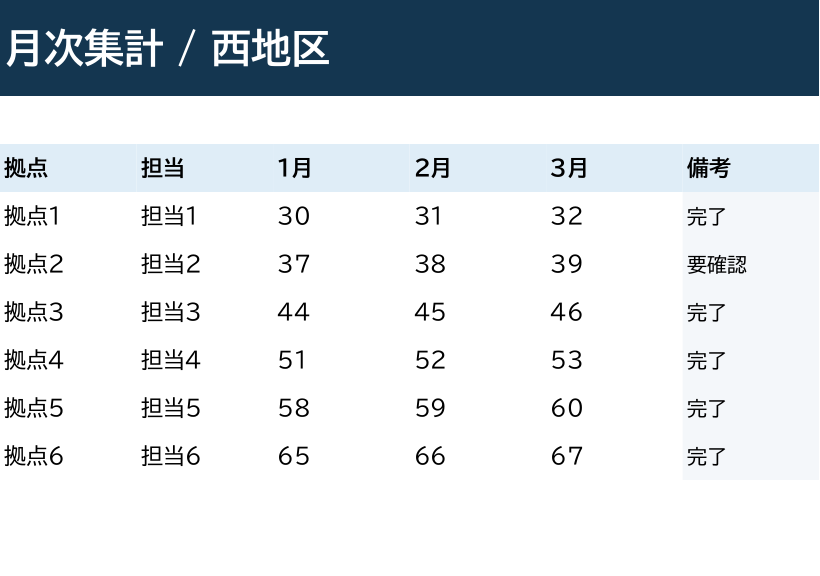
PNGを元サイズで開く · PNGを保存
縦長一覧
125行の一覧は1〜70行と71〜125行の2ページになります。どちらもA〜F列を描画し、行の続きを次ページへ送っています。
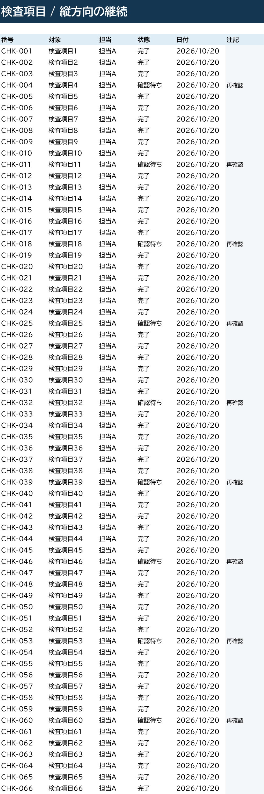
PNGを元サイズで開く · PNGを保存
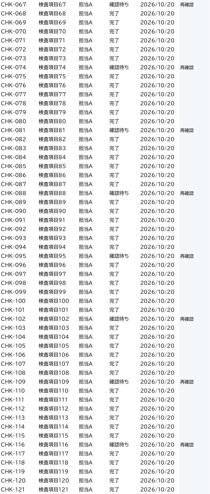
PNGを元サイズで開く · PNGを保存
横長の範囲を縮小して横分割
42列のマトリックスは、文字の最小サイズ12pxを保つ倍率まで縮小します。その倍率で幅2048pxに収まるA〜AC列を先に、AD〜AP列を次に描画し、列の境目で2ページに分割しました。
reportにはRANGE_SCALEDとHORIZONTAL_PAGINATIONを記録します。横長シートも生成対象に含まれ、全体の結果はcompleteです。
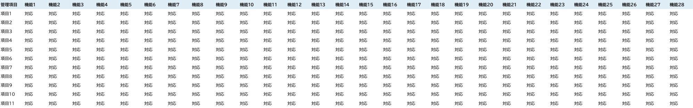
PNGを元サイズで開く · PNGを保存
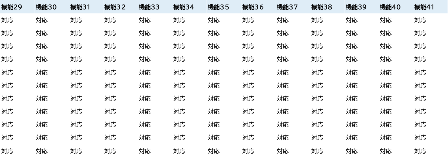
PNGを元サイズで開く · PNGを保存
追加1：横に広い表
24列の表は全体を1ページに縮小します。同じExcelの48列の表は、文字をさらに小さくしすぎずに横方向へ分割します。以下は実際の同期HTTP APIから取得した全ページです。
| 追加入力 | 描画したシート | PNG | 結果 | |
|---|---|---|---|---|
| 横長の表 | 2シート | 3ページ | 3ページ | partial |
| 画像と文字配置 | 3シート | 3ページ | 3ページ | partial |
| 横長の表と画像 | 2シート | 3ページ | 3ページ | partial |
3種類とも全範囲を生成しています。横長の2種類は結合見出しがページ境界をまたぐ注意、文字配置のサンプルは意図した文字切れの注意を含むため、結果はpartialです。このサンプルには見送った範囲はありません。
| PNGページ | シート | 描画した行・列 | 大きさ | 倍率 |
|---|---|---|---|---|
| ページ01 | 24列の横長一覧 | A1:X29（1〜29行、A〜X列） | 2048 × 787 px | 1.140 px/pt（基準の57.0%） |
| ページ02 | 48列・横分割 | A1:Y29（1〜29行、A〜Y列） | 2006 × 760 px | 1.091 px/pt（基準の54.5%） |
| ページ03 | 48列・横分割 | Z1:AV29（1〜29行、Z〜AV列） | 1845 × 760 px | 1.091 px/pt（基準の54.5%） |


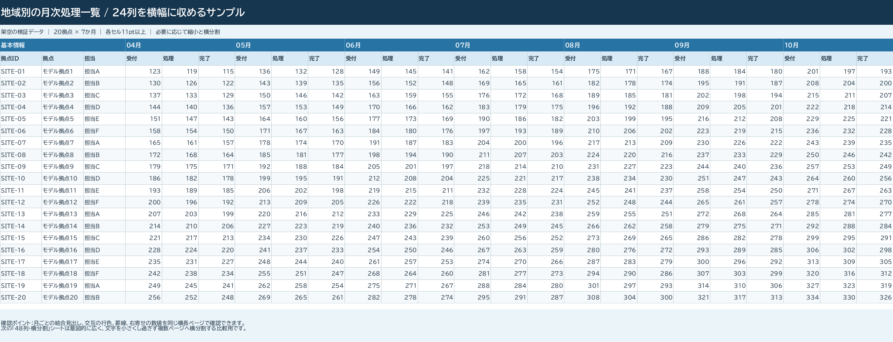
PNGを元サイズで開く · PNGを保存
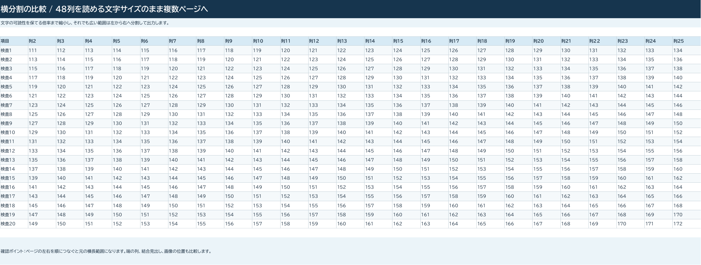
PNGを元サイズで開く · PNGを保存
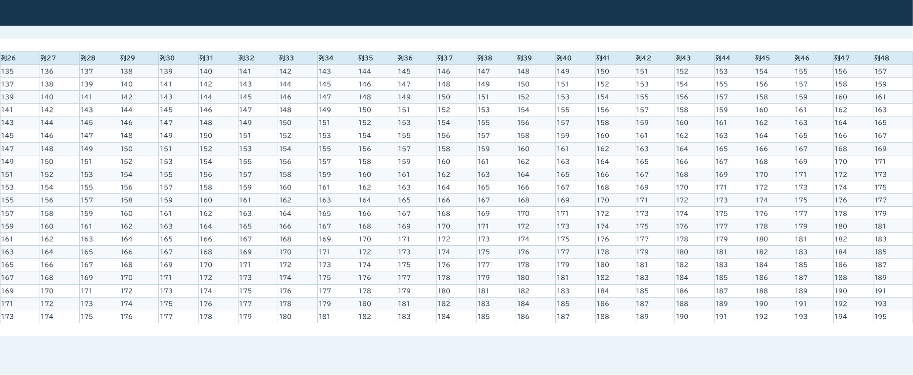
PNGを元サイズで開く · PNGを保存
48列・横分割だけを指定した結果：PNG・PDFとも2ページ
sheet=48列・横分割を指定したHTTPリクエストも200で完了しました。全ページを保存し、reportの連番・寸法・ハッシュと照合しています。


追加2：画像・文字のはみ出し・中央揃え
1つのExcelに3つの比較シートを用意しました。1ページ目は文字を含む画面画像、模式図、グラフ画像とセルの説明です。グラフはPNGとして貼り付けたもので、Excelのネイティブグラフではありません。
| PNGページ | シート | 描画した行・列 | 大きさ | 倍率 |
|---|---|---|---|---|
| ページ01 | 画像3種と記録 | A1:O38（1〜38行、A〜O列） | 1733 × 1824 px | 2.000 px/pt（基準の100.0%） |
| ページ02 | 文字のはみ出し比較 | A1:L22（1〜22行、A〜L列） | 1187 × 1232 px | 2.000 px/pt（基準の100.0%） |
| ページ03 | 縦書きと折返し中央 | A1:U26（1〜26行、A〜U列） | 1082 × 1304 px | 2.000 px/pt（基準の100.0%） |


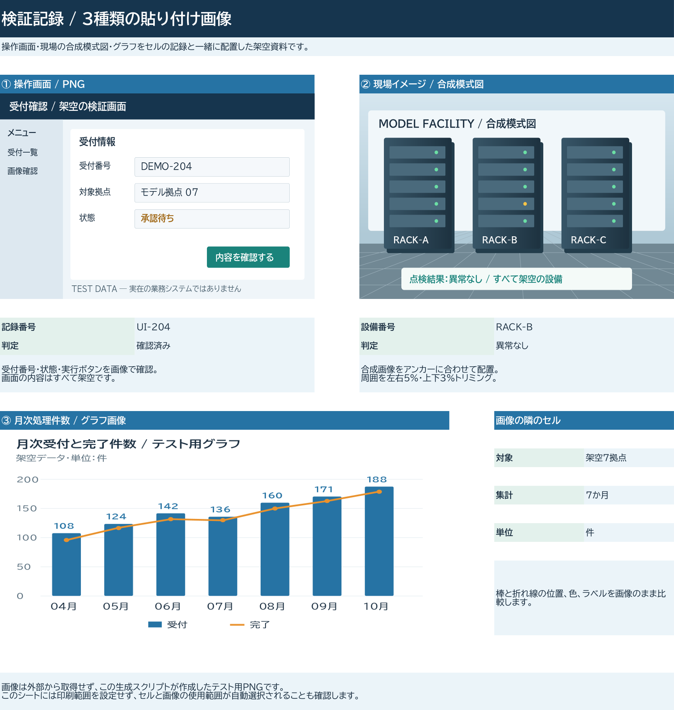
PNGを元サイズで開く · PNGを保存
同じ「プログラム名」を3つのセル配置で比較
文字のはみ出しと結合セルを比較します。上段は狭いC8に置いた文字が、同じ背景色の空セルD8・E8まで表示されます。中段はC13:E13を結合したラベルです。下段はD18に「隣の値」があるため、C18の文字はその境界で止まります。
下段の文字が途中で切れるのは、この比較で意図した状態です。はみ出しを許す上段や、折り返しと中央揃えを組み合わせた次のシートと見比べられます。
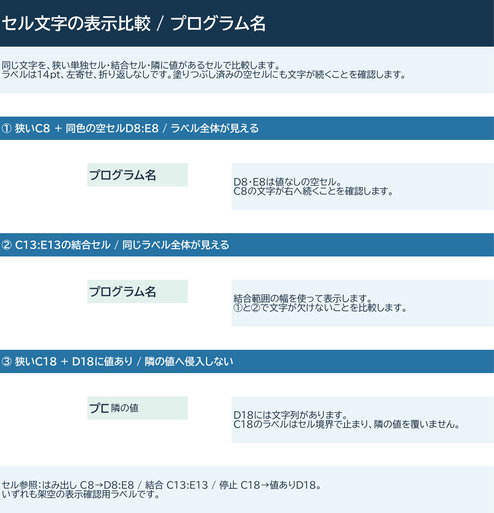
PNGを元サイズで開く · PNGを保存
折り返し・上下左右中央揃え・縦書きの比較
上段は色付きの結合見出し「ウィンドウ」と「検証結果」。縦長の結合セルに「起動」「表示内容」「表示順」「検索機能」「PG検証」「カーソル移動順」を並べ、次の3つを比較します。
| 位置 | セルの設定 | 比較する内容 |
|---|---|---|
| 左：A〜F列 | 縦書き（rotation 255）・左右中央・上揃え | 文字を縦方向に積む配置 |
| 中央：H〜M列 | 約1文字幅・折り返し・上下左右中央揃え | 横書きを狭い幅で折り返す配置 |
| 右：O〜T列 | 約2文字幅・折り返し・上下左右中央揃え | セル幅による改行位置と中央揃えの違い |
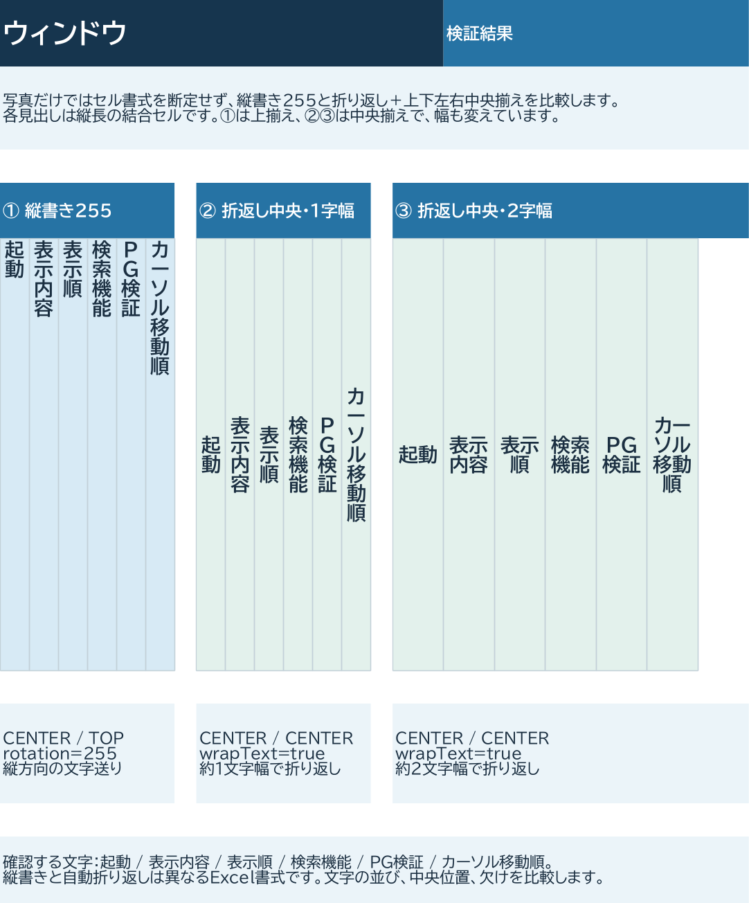
PNGを元サイズで開く · PNGを保存
追加3：横長の表と画像
27列の表と画像2枚は縮小して1ページに、52列の表と画像1枚は横方向に分割して描画します。画像も表と同じシート座標を使い、そのページと重なる部分を含めています。
| PNGページ | シート | 描画した行・列 | 大きさ | 倍率 |
|---|---|---|---|---|
| ページ01 | 横長一覧と画像 | A1:AA38（1〜38行、A〜AA列） | 2048 × 1098 px | 1.204 px/pt（基準の60.2%） |
| ページ02 | 52列・横分割 | A1:AC29（1〜29行、A〜AC列） | 1994 × 760 px | 1.091 px/pt（基準の54.5%） |
| ページ03 | 52列・横分割 | AD1:AZ29（1〜29行、AD〜AZ列） | 1582 × 760 px | 1.091 px/pt（基準の54.5%） |


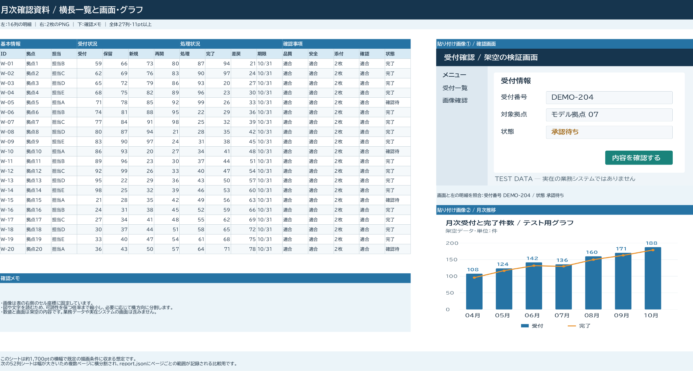
PNGを元サイズで開く · PNGを保存
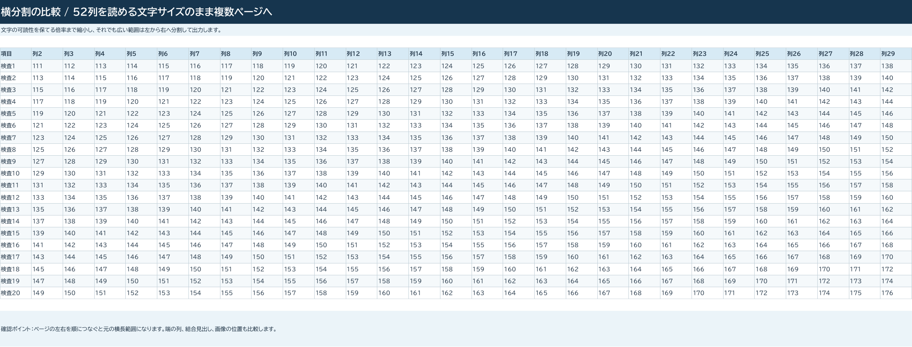
PNGを元サイズで開く · PNGを保存
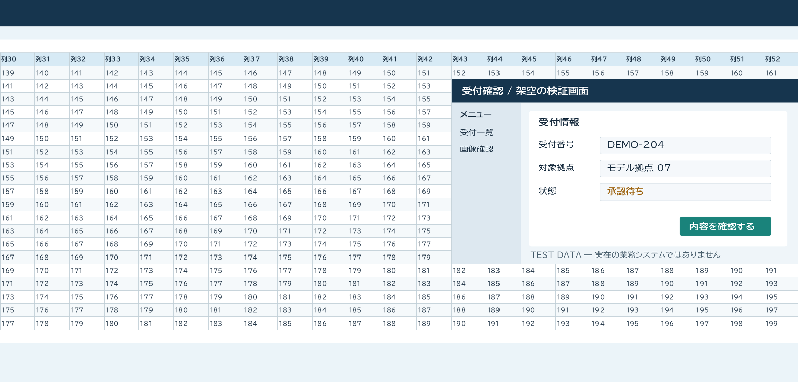
PNGを元サイズで開く · PNGを保存
52列・横分割だけを指定した結果：PNG・PDFとも2ページ
sheet=52列・横分割を指定したHTTPリクエストも200で完了しました。全ページを保存し、reportの連番・寸法・ハッシュと照合しています。


追加サンプルは最大横幅2048px・最小セル文字サイズ12pxの既定設定を使用しています。画像内の文字にはこの閾値の検査は適用されません。入力の画像アンカーが出力ページに含まれることを検証し、各ページの寸法・ファイルサイズ・ハッシュをreportと照合しています。
10回のHTTPリクエスト・結果・実測時間と入力生成・HTTP変換の再実行手順も保存しています。
再現方法と範囲
入力は全て架空の内容です。最初の4シートのサンプルはfunctions/excel2img/scripts/CreateRenderDemo.javaで作成し、HTTP・Queueと同じExcelImageServiceでPNG・PDFへ変換しています。追加3パターンはCreateAdditionalRenderSamples.javaで作成し、run_additional_examples.pyから実際のHTTP APIへ送信しています。
cd functions/excel2img
./mvnw package
java -Djava.awt.headless=true \
--class-path "target/classes:$(cat target/license-runtime-classpath.txt)" \
scripts/CreateRenderDemo.java ../../docs/APIDocs/excel2img/examples基本サンプルの実行記録は変換処理自体の実測時間です。追加サンプルの記録はローカル環境でのHTTP往復時間です。文字のサイズ・折り返し・図形の描画はExcelと差が出るため、元ファイルと出力の両方で確認できます。